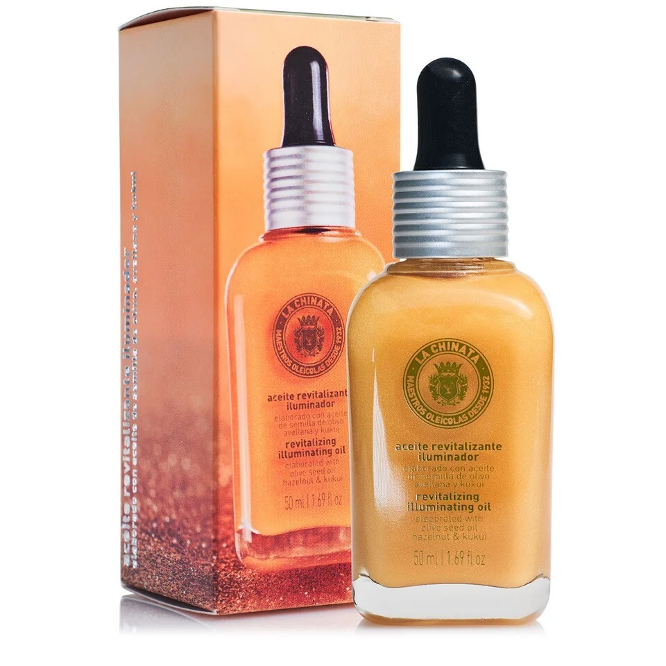

Cosmetic Made in Spain
聯繫我們
產品展示
LA CHINATA ACEITE ILUMINADOR REVITALIZANTE DE DIARIO

112 Kr 50ml
El Aceite de Día Revitalizante Iluminador es un elixir ideal para reducir la aparición de manchas en la piel, repararla y reducir la irritación provocada por factores externos como el sol o afecciones cutáneas como la dermatitis, dejando una piel con más vitalidad y preparada para evitar daños. causados por la luz solar, la contaminación y el estrés oxidativo, entre otros. Este Aceite Revitalizante está elaborado con aceite de avellana, que tiene propiedades antioxidantes e hidratantes; el aceite de rosa mosqueta, con acción regeneradora, cicatrizante y reductora de la aparición de manchas en la piel; aceite de semilla de oliva, con cualidades hidratantes y antioxidantes; El aloe vera, antiinflamatorio y reparador, y el aceite de kukui, muy rico en omega 3, que ayuda a la reparación de la piel y es perfecto para reducir las irritaciones cutáneas provocadas por el sol, dermatitis, etc. Es un aceite de fácil absorción que deja la piel hidratada, luminosa, tersa y radiante. Además, contiene principios activos que la mantienen hidratada y protegida durante todo el día. Tiene un aroma muy fresco y agradable gracias a su contenido en aceite esencial de menta y mandarina.
Vida Copyright © 2024 All rights reserved